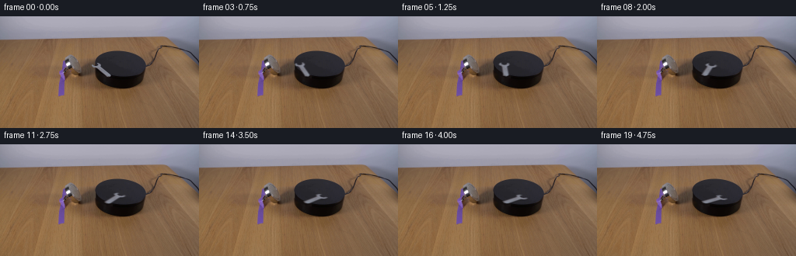
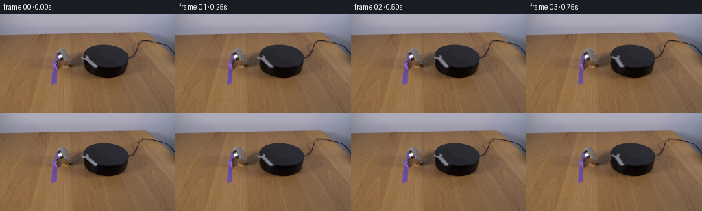

CODING AGENTS AS PIXEL WORLD MODELS
traex/GPT-6.1-Sol · 0101
点击播放 · 原生 RGB 像素
逐轮保存的候选
回放视频、检查图与代码变化。
每份候选均可单独播放。实际图片检查记录在下方工具轨迹中。
候选 01播放与检查图
点击播放 · 原生 RGB 像素


展开代码变化
--- 上一保存版本
+++ 本次保存版本
@@ -0,0 +1,150 @@
+from pathlib import Path
+import numpy as np
+from PIL import Image
+import cv2
+from scipy.ndimage import gaussian_filter
+from scipy.optimize import least_squares
+import artifact_io
+
+ROOT = Path(__file__).resolve().parent
+
+def make_scene(image):
+ h,w = image.shape[:2]
+ Y,X = np.mgrid[:h,:w].astype(float)
+ src = image.astype(float)
+ # Recover the supporting disk's perspective from its undisturbed perimeter.
+ pts=[]
+ for y in range(45,77):
+ xs=np.where((src[y,:,0]<65)&(src[y,:,2]>src[y,:,0]+1)&(np.arange(w)>119)&(np.arange(w)<189))[0]
+ if len(xs):
+ pts.append([xs.max()+.35,y])
+ if y<60: pts.append([xs.min()-.35,y])
+ pts=np.array(pts)
+ def error(p):
+ cx,cy,rx,ry,k=p
+ px,py=pts.T
+ return ((px-cx-k*(py-cy))/rx)**2+((py-cy)/ry)**2-1
+ cx,cy,rx,ry,k=least_squares(error,[155,61.5,33,16,.2]).x
+ radius=((X-cx-k*(Y-cy))/rx)**2+((Y-cy)/ry)**2
+ # Low-order fit retains the slight shading variation across the black top.
+ def features(x,y):
+ a=(x-150)/30; b=(y-61)/16
+ return np.stack([a*0+1,a,b,a*a,a*b,b*b,a**3,a*a*b,a*b*b,b**3],axis=-1)
+ good=(radius<.88)&(X>133)&(Y<75)&(src.mean(2)<57)
+ A=features(X[good],Y[good])
+ coefficients=np.linalg.lstsq(A,src[good],rcond=None)[0]
+ top=features(X,Y)@coefficients
+ top=np.clip(top,[31,30,35],[49,48,56])
+ # A few original high-frequency surface samples restore sensor/material grain.
+ residual=src-gaussian_filter(src,(1.0,1.0,0))
+ top+=np.roll(residual,17,axis=1)*.32
+ topcov=np.zeros((h,w))
+ sidecov=np.zeros((h,w))
+ for dy in [-.375,-.125,.125,.375]:
+ for dx in [-.375,-.125,.125,.375]:
+ xx=X+dx; yy=Y+dy
+ rr=((xx-cx-k*(yy-cy))/rx)**2+((yy-cy)/ry)**2
+ topcov+=(rr<=1)/16
+ # Vertical extrusion, with a 15px black side below the upper disk.
+ disc=(xx-cx)**2
+ # Sample the extrusion to preserve the projected near-side silhouette.
+ exists=rr<=1
+ for z in np.linspace(0,15,31):
+ rr2=((xx-cx-k*(yy-z-cy))/rx)**2+((yy-z-cy)/ry)**2
+ exists |= rr2<=1
+ sidecov+=exists/16
+ # Only a tiny patch of the near-side is obscured; match its original dark finish.
+ side=np.zeros_like(src)
+ side[...,0]=20+.12*(X-132)+.12*(Y-75)
+ side[...,1]=15+.07*(X-132)+.08*(Y-75)
+ side[...,2]=15+.06*(X-132)+.08*(Y-75)
+ side+=np.roll(residual,13,axis=1)*.2
+ # Local tabletop polynomial reconstructs the jaw's two small overhanging tips.
+ tablegood=(X>=106)&(X<=121)&(Y>=57)&(Y<=75)
+ tablegood &= (src[...,0]>src[...,1]*1.16)&(src[...,1]>src[...,2]*1.08)
+ tablecoef=np.linalg.lstsq(features(X[tablegood],Y[tablegood]),src[tablegood],rcond=None)[0]
+ table=features(X,Y)@tablecoef
+ table=np.clip(table,[58,42,30],[140,109,85])
+ table+=np.roll(residual,7,axis=1)*.55
+ recovered=table*(1-sidecov[...,None])+side*sidecov[...,None]
+ recovered=recovered*(1-topcov[...,None])+top*topcov[...,None]
+ # Source silhouette: the two open jaws and the short steel handle.
+ spans={60:[(124,127)],61:[(125,129)],62:[(118,119),(126,129)],
+ 63:[(118,121),(124,129)],64:[(118,129)],65:[(119,130)],
+ 66:[(122,131)],67:[(125,132)],68:[(126,134)],69:[(127,135)],
+ 70:[(128,136)],71:[(129,137)],72:[(130,139)],73:[(132,140)],
+ 74:[(133,141)],75:[(134,142)],76:[(135,142)],77:[(137,142)]}
+ support=np.zeros((h,w),bool)
+ for y, runs in spans.items():
+ for a,b in runs: support[y,a:b+1]=True
+ alpha=np.zeros((h,w),float)
+ foreground_reference=np.array([130.,131.,143.])
+ db=src-recovered
+ dmetal=foreground_reference-recovered
+ estimated=(db*dmetal).sum(2)/(dmetal*dmetal).sum(2).clip(1)
+ alpha[support]=np.clip(estimated[support],0,1)
+ alpha[alpha>.9]=1
+ steel=np.zeros_like(src)
+ nonzero=alpha>.025
+ steel[nonzero]=(src[nonzero]-recovered[nonzero]*(1-alpha[nonzero,None]))/alpha[nonzero,None]
+ steel=np.clip(steel,0,255)
+ # Remove the wrench and its narrow contact shadow, preserving every other pixel.
+ removal=support.astype(np.uint8)
+ # The old shadow hugs the disk's near-left edge underneath the wrench.
+ shadowruns={62:(121,124),63:(121,124),64:(121,124),65:(122,126),
+ 66:(123,127),67:(123,128),68:(124,130),69:(125,131),
+ 70:(126,132),71:(127,133),72:(128,134),73:(129,135),
+ 74:(130,136),75:(131,137),76:(134,139),77:(137,143),78:(138,143)}
+ for y,(a,b) in shadowruns.items():removal[y,a:b+1]=1
+ # Slight feather only along the reconstructed surface patch's outside.
+ patch=cv2.dilate(removal,np.ones((3,3),np.uint8),iterations=1).astype(float)
+ blend=gaussian_filter(patch,.48)
+ blend[removal>0]=1
+ clean=src*(1-blend[...,None])+recovered*blend[...,None]
+ # Leave the border of the jaw hole at its true tabletop/side color.
+ return clean,steel,alpha,topcov,sidecov
+
+def generate():
+ src=np.array(Image.open(ROOT/'first_frame.png').convert('RGB'))
+ clean,steel,alpha,topcov,sidecov=make_scene(src)
+ tmp=ROOT/'.tmp'; tmp.mkdir(exist_ok=True)
+ Image.fromarray(np.uint8(np.clip(clean,0,255))).save(tmp/'clean_plate.png')
+ Image.fromarray(np.uint8(np.clip(alpha*255,0,255))).save(tmp/'wrench_alpha.png')
+ h,w=src.shape[:2]
+ P=np.array([[1.,.2543],[0.,.5156]])
+ Pinv=np.linalg.inv(P)
+ pivot=np.array([140.5,75.0])
+ frames=[src.copy()]
+ premul=(steel*alpha[...,None]).astype(np.float32)
+ # A tail contact point stays on the platform as the jaw swings clockwise.
+ for i in range(1,20):
+ time=i/4
+ angle=np.deg2rad(87)*(1-np.exp(-(time/2.15)**1.60))
+ c,s=np.cos(angle),np.sin(angle)
+ R=np.array([[c,-s],[s,c]])
+ T=P@R@Pinv
+ offset=pivot-T@pivot
+ affine=np.column_stack([T,offset]).astype(np.float32)
+ # Supersampled integration keeps the tiny wrench's outline subpixel smooth.
+ scale=4
+ af=affine.copy();af[:,:2]*=scale
+ af[:,2]=af[:,2]*scale+(scale-1)/2
+ size=(w*scale,h*scale)
+ a4=cv2.warpAffine(alpha.astype(np.float32),af,size,flags=cv2.INTER_LINEAR)
+ p4=cv2.warpAffine(premul,af,size,flags=cv2.INTER_LINEAR)
+ a=cv2.resize(a4,(w,h),interpolation=cv2.INTER_AREA)
+ p=cv2.resize(p4,(w,h),interpolation=cv2.INTER_AREA)
+ # A close soft contact shadow follows the metal, not the stationary setup.
+ shadow4=cv2.warpAffine(a4,np.array([[1,0,-.35*scale],[0,1,.9*scale]],np.float32),size,flags=cv2.INTER_LINEAR)
+ shadow4=cv2.GaussianBlur(shadow4,(0,0),.5*scale)
+ shadow=cv2.resize(shadow4,(w,h),interpolation=cv2.INTER_AREA)
+ strength=.34*(.2+.8*sidecov)
+ scene=clean*(1-shadow[...,None]*strength[...,None])
+ # The top face remains level; only the polished grain's reflection shifts gently.
+ glint=1+.025*np.sin(2*angle)
+ out=scene*(1-a[...,None])+p*glint
+ frames.append(np.uint8(np.clip(np.rint(out),0,255)))
+ return np.stack(frames)
+
+if __name__=='__main__':
+ artifact_io.save(generate(),ROOT)
可观测工具轨迹
实际执行的命令与返回图片。
命令 1exit 0
/bin/bash -lc 'ls -la && cat prompt.txt && cat GENERATION_RULES.md'
命令 2exit 0
/bin/bash -lc "cat artifact_io.py && python - <<'PY'
from PIL import Image
import numpy as np
im=np.array(Image.open('first_frame.png'));print(im.shape)
print('downsample RGB')
a=np.array(Image.fromarray(im).resize((64,36)))
# nearest color characters generalized rgb brightness
for y in range(36):
s=''
for r,g,b in a[y].astype(int):
if max(r,g,b)-min(r,g,b)<12:
c=' .'[int((r+g+b)/3>245)] if r>230 else ('_' if r>195 else '-' if r>155 else '=' if r>105 else '+' if r>65 else '#' if r>30 else '@')
elif r>b+25 and r>g+10:c='R' if r>160 else 'r'
elif b>r+15:c='B' if b>160 else 'b'
else:c='o'
s+=c
print(f'{y*4:03}',s)
PY"命令 3exit 0
/bin/bash -lc "python - <<'PY'
from PIL import Image
import numpy as np
im=np.array(Image.open('first_frame.png')).astype(int)
for name,(x0,y0,x1,y1) in {'platform':(108,40,193,94),'leftmetal':(68,48,105,108)}.items():
print(name)
for y in range(y0,y1):
s=''
for r,g,b in im[y,x0:x1]:
# reddish table = ., neutral dark in increasing intensity
if r>g*1.20 and r>b*1.15: c='.' if r>80 else ','
elif b>r*1.1 and b>g*1.05: c='b' if max(r,g,b)>100 else 'u'
else:c='@%#*+=-:; '[min(9,int((r+g+b)/3)//25)]
s+=c
print(f'{y:03} {s}')
print('samples')
for y in range(44,89,3):
print(y, ' '.join(f'{x}:{tuple(im[y,x])}' for x in range(118,187,4)))
PY"命令 4exit 0
/bin/bash -lc "python - <<'PY'
from PIL import Image
import numpy as np
im=np.array(Image.open('first_frame.png')).astype(int)
print('x', ''.join(str(x//10%10) for x in range(108,149)))
print('x', ''.join(str(x%10) for x in range(108,149)))
for y in range(56,82):
s=''
for r,g,b in im[y,108:149]:
if r>1.24*g and r>1.2*b:c='.' if r>75 else ','
else:c='0123456789ABCDEFGHIJKLMNOPQRSTUVWXYZ'[min(35,round((r+g+b)/3/7))]
s+=c
print(y,s)
for y in range(59,78):
print(y, ' '.join(f'{x}:{\"/\".join(str(v) for v in im[y,x])}' for x in range(119,144)))
PY"命令 5exit 0
/bin/bash -lc "python - <<'PY'
from PIL import Image
import numpy as np
im=np.asarray(Image.open('first_frame.png')).astype(float)
# Print brightness and chroma crop at wrench head
chars=' .,:;ox%#@'
print(' '+''.join(str(x//10%10) for x in range(95,145)))
print(' '+''.join(str(x%10) for x in range(95,145)))
for y in range(48,82):
print(f'{y:3} '+''.join(chars[min(9,int(v/18))] for v in np.mean(im[y,95:145],axis=1)))
for y in range(59,69):
print(y,[(x,tuple(im[y,x].astype(int))) for x in range(108,125)])
PY"命令 6exit 0
/bin/bash -lc "python - <<'PY'
import numpy as np
from PIL import Image
im=np.array(Image.open('first_frame.png')).astype(float)
for y in range(43,79):
row=im[y]
mask=(row[:,0]<65)&(row[:,2]>row[:,0]-6)
xs=np.where(mask & (np.arange(256)>119)&(np.arange(256)<193))[0]
print(y,xs.min() if len(xs) else None,xs.max() if len(xs) else None)
# dependencies
import scipy,cv2
print('cv2',cv2.__version__)
PY"命令 7exit 0
/bin/bash -lc "mkdir -p .tmp && cat > .tmp/analyze.py <<'PY'
import numpy as np
from PIL import Image
from scipy.optimize import least_squares
im=np.array(Image.open('first_frame.png')).astype(float)
pts=[]
for y in range(45,77):
xs=np.where((im[y,:,0]<65)&(im[y,:,2]>im[y,:,0]+1)&(np.arange(256)>119)&(np.arange(256)<189))[0]
if len(xs):
pts.append([float(xs.max())+.35,y])
if y<60:pts.append([float(xs.min())-.35,y])
# add top bottom inferred
pts=np.array(pts)
def resid(p):
cx,cy,rx,ry,k=p
x,y=pts.T
return ((x-cx-k*(y-cy))/rx)**2+((y-cy)/ry)**2-1
p=least_squares(resid,[155,61.5,33,16,.2]).x
print('ellipse fit',p,'rmse',np.sqrt(np.mean(resid(p)**2)))
for y in range(59,78):
cx,cy,rx,ry,k=p
v=1-((y-cy)/ry)**2
print(y, cx+k*(y-cy)-rx*np.sqrt(max(0,v)),cx+k*(y-cy)+rx*np.sqrt(max(0,v)))
np.save('.tmp/ellipse.npy',p)
PY
python .tmp/analyze.py"命令 8exit 0
/bin/bash -lc "python - <<'PY'
import numpy as np
from PIL import Image
im=np.array(Image.open('first_frame.png')).astype(int)
for y in range(59,79):
print(y,' '.join(f'{x}:{round(im[y,x].mean()):3}' for x in range(116,145)))
PY"命令 9exit 0
/bin/bash -lc "cat > generate.py <<'PY'
from pathlib import Path
import numpy as np
from PIL import Image
import cv2
from scipy.ndimage import gaussian_filter
from scipy.optimize import least_squares
import artifact_io
ROOT = Path(__file__).resolve().parent
def make_scene(image):
h,w = image.shape[:2]
Y,X = np.mgrid[:h,:w].astype(float)
src = image.astype(float)
# Recover the supporting disk's perspective from its undisturbed perimeter.
pts=[]
for y in range(45,77):
xs=np.where((src[y,:,0]<65)&(src[y,:,2]>src[y,:,0]+1)&(np.arange(w)>119)&(np.arange(w)<189))[0]
if len(xs):
pts.append([xs.max()+.35,y])
if y<60: pts.append([xs.min()-.35,y])
pts=np.array(pts)
def error(p):
cx,cy,rx,ry,k=p
px,py=pts.T
return ((px-cx-k*(py-cy))/rx)**2+((py-cy)/ry)**2-1
cx,cy,rx,ry,k=least_squares(error,[155,61.5,33,16,.2]).x
radius=((X-cx-k*(Y-cy))/rx)**2+((Y-cy)/ry)**2
# Low-order fit retains the slight shading variation across the black top.
def features(x,y):
a=(x-150)/30; b=(y-61)/16
return np.stack([a*0+1,a,b,a*a,a*b,b*b,a**3,a*a*b,a*b*b,b**3],axis=-1)
good=(radius<.88)&(X>133)&(Y<75)&(src.mean(2)<57)
A=features(X[good],Y[good])
coefficients=np.linalg.lstsq(A,src[good],rcond=None)[0]
top=features(X,Y)@coefficients
top=np.clip(top,[31,30,35],[49,48,56])
# A few original high-frequency surface samples restore sensor/material grain.
residual=src-gaussian_filter(src,(1.0,1.0,0))
top+=np.roll(residual,17,axis=1)*.32
topcov=np.zeros((h,w))
sidecov=np.zeros((h,w))
for dy in [-.375,-.125,.125,.375]:
for dx in [-.375,-.125,.125,.375]:
xx=X+dx; yy=Y+dy
rr=((xx-cx-k*(yy-cy))/rx)**2+((yy-cy)/ry)**2
topcov+=(rr<=1)/16
# Vertical extrusion, with a 15px black side below the upper disk.
disc=(xx-cx)**2
# Sample the extrusion to preserve the projected near-side silhouette.
exists=rr<=1
for z in np.linspace(0,15,31):
rr2=((xx-cx-k*(yy-z-cy))/rx)**2+((yy-z-cy)/ry)**2
exists |= rr2<=1
sidecov+=exists/16
# Only a tiny patch of the near-side is obscured; match its original dark finish.
side=np.zeros_like(src)
side[...,0]=20+.12*(X-132)+.12*(Y-75)
side[...,1]=15+.07*(X-132)+.08*(Y-75)
side[...,2]=15+.06*(X-132)+.08*(Y-75)
side+=np.roll(residual,13,axis=1)*.2
# Local tabletop polynomial reconstructs the jaw's two small overhanging tips.
tablegood=(X>=106)&(X<=121)&(Y>=57)&(Y<=75)
tablegood &= (src[...,0]>src[...,1]*1.16)&(src[...,1]>src[...,2]*1.08)
tablecoef=np.linalg.lstsq(features(X[tablegood],Y[tablegood]),src[tablegood],rcond=None)[0]
table=features(X,Y)@tablecoef
table=np.clip(table,[58,42,30],[140,109,85])
table+=np.roll(residual,7,axis=1)*.55
recovered=table*(1-sidecov[...,None])+side*sidecov[...,None]
recovered=recovered*(1-topcov[...,None])+top*topcov[...,None]
# Source silhouette: the two open jaws and the short steel handle.
spans={60:[(124,127)],61:[(125,129)],62:[(118,119),(126,129)],
63:[(118,121),(124,129)],64:[(118,129)],65:[(119,130)],
66:[(122,131)],67:[(125,132)],68:[(126,134)],69:[(127,135)],
70:[(128,136)],71:[(129,137)],72:[(130,139)],73:[(132,140)],
74:[(133,141)],75:[(134,142)],76:[(135,142)],77:[(137,142)]}
support=np.zeros((h,w),bool)
for y, runs in spans.items():
for a,b in runs: support[y,a:b+1]=True
alpha=np.zeros((h,w),float)
foreground_reference=np.array([130.,131.,143.])
db=src-recovered
dmetal=foreground_reference-recovered
estimated=(db*dmetal).sum(2)/(dmetal*dmetal).sum(2).clip(1)
alpha[support]=np.clip(estimated[support],0,1)
alpha[alpha>.9]=1
steel=np.zeros_like(src)
nonzero=alpha>.025
steel[nonzero]=(src[nonzero]-recovered[nonzero]*(1-alpha[nonzero,None]))/alpha[nonzero,None]
steel=np.clip(steel,0,255)
# Remove the wrench and its narrow contact shadow, preserving every other pixel.
removal=support.astype(np.uint8)
# The old shadow hugs the disk's near-left edge underneath the wrench.
shadowruns={62:(121,124),63:(121,124),64:(121,124),65:(122,126),
66:(123,127),67:(123,128),68:(124,130),69:(125,131),
70:(126,132),71:(127,133),72:(128,134),73:(129,135),
74:(130,136),75:(131,137),76:(134,139),77:(137,143),78:(138,143)}
for y,(a,b) in shadowruns.items():removal[y,a:b+1]=1
# Slight feather only along the reconstructed surface patch's outside.
patch=cv2.dilate(removal,np.ones((3,3),np.uint8),iterations=1).astype(float)
blend=gaussian_filter(patch,.48)
blend[removal>0]=1
clean=src*(1-blend[...,None])+recovered*blend[...,None]
# Leave the border of the jaw hole at its true tabletop/side color.
return clean,steel,alpha,topcov,sidecov
def generate():
src=np.array(Image.open(ROOT/'first_frame.png').convert('RGB'))
clean,steel,alpha,topcov,sidecov=make_scene(src)
tmp=ROOT/'.tmp'; tmp.mkdir(exist_ok=True)
Image.fromarray(np.uint8(np.clip(clean,0,255))).save(tmp/'clean_plate.png')
Image.fromarray(np.uint8(np.clip(alpha*255,0,255))).save(tmp/'wrench_alpha.png')
h,w=src.shape[:2]
P=np.array([[1.,.2543],[0.,.5156]])
Pinv=np.linalg.inv(P)
pivot=np.array([140.5,75.0])
frames=[src.copy()]
premul=(steel*alpha[...,None]).astype(np.float32)
# A tail contact point stays on the platform as the jaw swings clockwise.
for i in range(1,20):
time=i/4
angle=np.deg2rad(87)*(1-np.exp(-(time/2.15)**1.60))
c,s=np.cos(angle),np.sin(angle)
R=np.array([[c,-s],[s,c]])
T=P@R@Pinv
offset=pivot-T@pivot
affine=np.column_stack([T,offset]).astype(np.float32)
# Supersampled integration keeps the tiny wrench's outline subpixel smooth.
scale=4
af=affine.copy();af[:,:2]*=scale
af[:,2]=af[:,2]*scale+(scale-1)/2
size=(w*scale,h*scale)
a4=cv2.warpAffine(alpha.astype(np.float32),af,size,flags=cv2.INTER_LINEAR)
p4=cv2.warpAffine(premul,af,size,flags=cv2.INTER_LINEAR)
a=cv2.resize(a4,(w,h),interpolation=cv2.INTER_AREA)
p=cv2.resize(p4,(w,h),interpolation=cv2.INTER_AREA)
# A close soft contact shadow follows the metal, not the stationary setup.
shadow4=cv2.warpAffine(a4,np.array([[1,0,-.35*scale],[0,1,.9*scale]],np.float32),size,flags=cv2.INTER_LINEAR)
shadow4=cv2.GaussianBlur(shadow4,(0,0),.5*scale)
shadow=cv2.resize(shadow4,(w,h),interpolation=cv2.INTER_AREA)
strength=.34*(.2+.8*sidecov)
scene=clean*(1-shadow[...,None]*strength[...,None])
# The top face remains level; only the polished grain's reflection shifts gently.
glint=1+.025*np.sin(2*angle)
out=scene*(1-a[...,None])+p*glint
frames.append(np.uint8(np.clip(np.rint(out),0,255)))
return np.stack(frames)
if __name__=='__main__':
artifact_io.save(generate(),ROOT)
PY
python generate.py"命令 10exit 0
/bin/bash -lc "python - <<'PY'
from PIL import Image
import numpy as np
for name in ['first_frame.png','.tmp/clean_plate.png','frames/01.png','frames/06.png','frames/12.png','frames/19.png']:
a=np.array(Image.open(name)).astype(float)
print('\\n',name)
for y in range(55,83):
chars=' .,:;ox%#@'
print(f'{y:3} '+''.join(chars[min(9,int(v/18))] for v in np.mean(a[y,114:166],axis=1)))
if 'frames' in name:
s=np.array(Image.open('first_frame.png')).astype(int)
diff=np.max(np.abs(a-s),axis=2)
print('diff pixels',np.sum(diff>2),'bounding',np.where(diff>2)[1].min(),np.where(diff>2)[1].max(),np.where(diff>2)[0].min(),np.where(diff>2)[0].max())
PY"命令 11exit 0
/bin/bash -lc "python - <<'PY'
from pathlib import Path
from PIL import Image
import numpy as np
import generate
frames=generate.generate()
assert frames.shape==(20,144,256,3)
assert frames.dtype==np.uint8
assert np.array_equal(frames[0],np.array(Image.open('first_frame.png').convert('RGB')))
z=np.load('pixels.npz')['pixels']
assert z.shape==(144,256,20)
print('Validated 20 RGB frames, 256x144, 4 fps; frame 00 is pixel-identical.')
print('Artifacts:', ', '.join(p.name for p in Path('.').iterdir() if p.name in ['generate.py','pixels.npz','index.html','frames']))
PY"保存候选 1 份；完成命令 11 次；可验证图片返回 0 张。原始 API 响应与完整日志保留在本地。